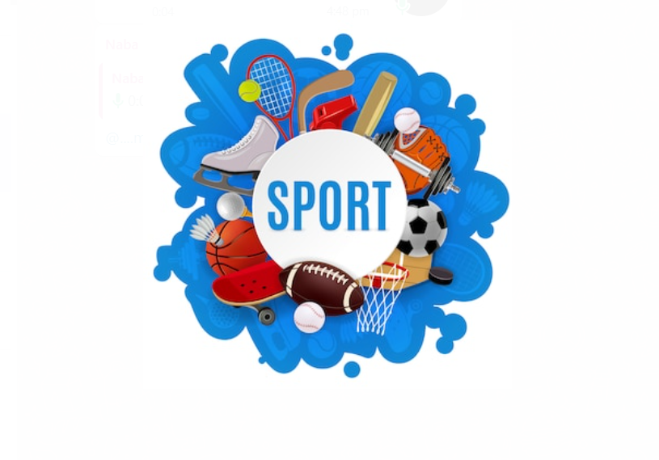

SPORTS NEWS
| Sports Times
"I can't play being mad. I go out there and have fun. It's a game, and that's how I am going to treat it."
26| May | 2023
Sport pertains to any form of physical activity or game, often competitive and organized, that aims to use, maintain, or improve physical ability and skills while providing enjoyment to participants and, in some cases, entertainment to spectators. sports can, through casual or organized participation, improve participants' physical health. Hundreds of sports exist, from those between single contestants, through to those with hundreds of simultaneous participants, either in teams or competing as individuals. In certain sports such as racing, many contestants may compete, simultaneously or consecutively
with one winner; in others, the contest (a match) is between two sides, each attempting to exceed the other. Some sports allow a "tie" or "draw", in which there is no single winner; others provide tie-breaking methods to ensure one winner. A number of contests may be arranged in a tournament producing a champion. Many sports leagues make an annual champion by arranging games in a regular sports season, followed in some cases by playoffs.
management, weight loss, blood circulation and stress reduction. The combination of cerebral and physical development allows for the strengthening and toning of bones and muscles through sports. Through sports, students learn how important it is to live a healthy lifestyle
Engaging in sports offers numerous benefits beyond physical well-being, extending into areas of mental and emotional health, personal development, and social interaction. In addition to enhancing physical health, participation in sports fosters mental resilience and emotional well-being. Athletes often develop crucial life skills such as discipline, teamwork, and leadership, which are applicable both on and off the field.
Moreover, the pursuit of a healthy lifestyle is a central theme in sports, influencing factors such as diet, sleep, and overall self-care. Athletes often become ambassadors for balanced living, inspiring others to adopt healthier habits. This emphasis on wellness can contribute to weight management, improved blood circulation, and stress reduction, offering a holistic approach to health.
Channel Nine's Wide World of Sports
Channel Nine's Wide World of Sports is Australia's Most enduring sports brand a position that provides unrivalled access to the very heart of all things sport at home and abroad!
In the educational context, sports play a pivotal role in the development of students. Beyond the physical education curriculum, sports instill values like sportsmanship, fair play, and respect for rules. Participation in team sports teaches collaboration and communication, essential skills in various aspects of life. Furthermore, sports provide a platform for students to set and achieve goals, boosting self-esteem and confidence. The combination of cerebral and physical development through sports contributes to the overall well-rounded growth of individuals. Whether through individual pursuits or team-based activities, students not only build physical strength and endurance but also enhance cognitive functions such as strategic thinking and decision-making. As educational institutions increasingly recognize the holistic benefits of sports, they are integrating sports programs into their curricula to promote a comprehensive approach to student development.